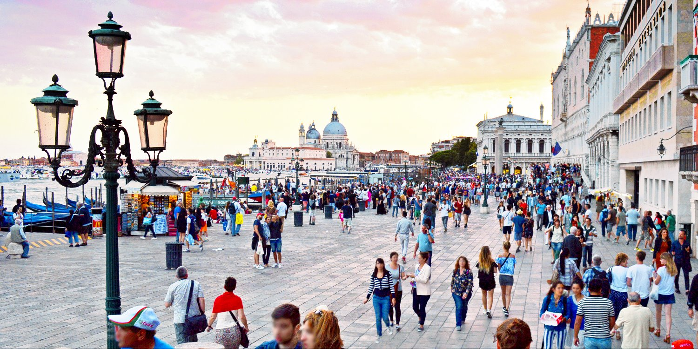
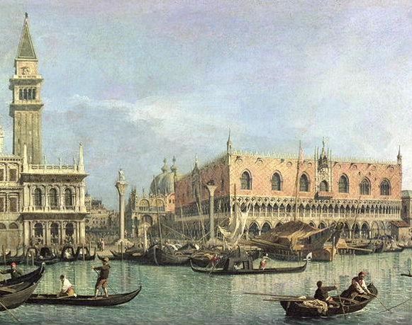
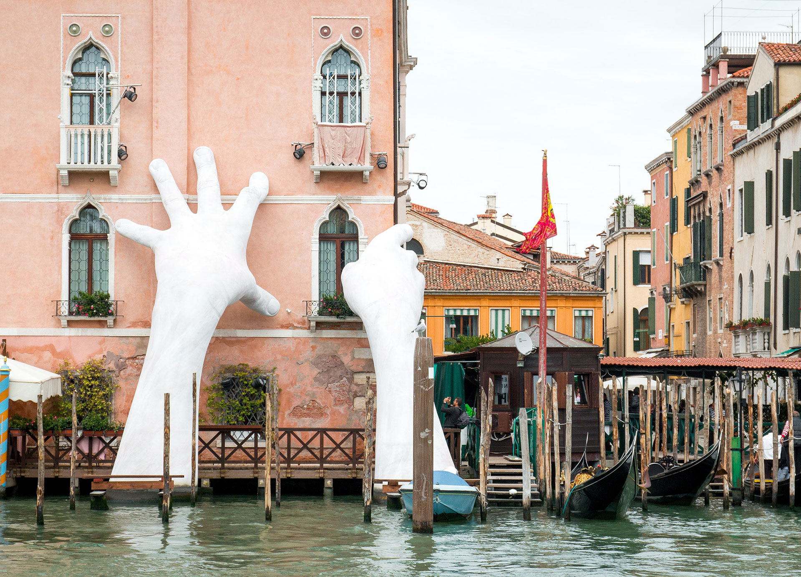
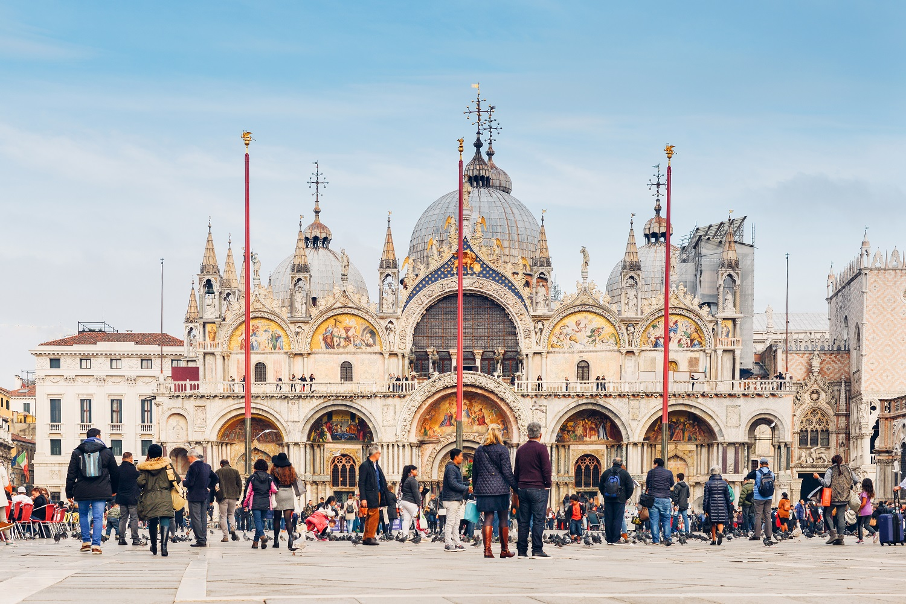
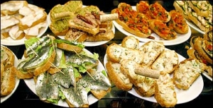

Overtoerisme

Een actueel woord dat al snel in verband met Venetië genoemd wordt is overtoerisme. Dit is de overtreffende trap van massatoerisme. Venetië is één van de plekken, net als Barcelona en Amsterdam, dat met dit verschijnsel te maken heeft. Het betekent eigenlijk dat er meer toerisme naar een plek komen dan dat de betreffende bestemming eigenlijk aankan. Denk daarbij onder andere aan de infrastructuur die zo zwaar belast wordt dat er eigenlijk een voor iedereen onaangename situatie ontstaat. Toeristen hebben te kampen met lange wachtrijen bij bezienswaardigheden, ondercapaciteit bij het openbaar vervoer en drukke straten en pleinen en straten waar je op de drukste momenten niet meer normaal kan lopen. Voor inwoners komt de leefbaarheid in het gedrang. In Venetië klagen de bewoners ook nog over het vrijwel continu aanwezige geluid van de zogenaamde rolkoffertjes.
Het is begrijpelijk dat zoveel mensen naar Venetië reizen. Deze plek is uniek op aarde door de vele kanalen en de Venetiaanse gondels. Tel daar de Italiaanse keuken en de historie van de voormalige Republiek Venetië bij op en je hebt wel een heel interessante bestemming te pakken. Wij zullen dan ook de laatste zijn die zeggen dat je niet naar Venetië met reizen. Wel vinden we dat we aan mogen geven dat je absoluut niet de enige toerist in Venetië zult zijn. Wees daar op voorbereid. Wat scheelt is als je je stedentrip naar Venetië in de wintermaanden plant. Met uitzondering van de carnavalsperiode is het dan rustiger in de straten en op de kanalen van Venetië. Met name in de maanden november en maart merk je dat deze bijzondere bestemming weer wat meer als een echte stad aanvoelt dan als een groot overbevolkt openluchtmuseum.
Geschiedenis van Venetië

De naam
Waar de naam "Venetië" precies vandaan komt is onduidelijk, maar deze is in elk geval verbonden met het volk de Veneti. Een verband met het Latijnse werkwoord venire (komen). Mogelijk is er een verband met het Latijnse woord venetus, dat "zeeblauw" betekent. Bijnamen van Venetië zijn onder meer "stad van het water", "stad van de bruggen", La Dominante en La Serenissima. De naam Venetia kwam voor het eerste voor in het Romeinse tijdperk.
Het begin
De eerste bewoners op de eilanden woonden er al voor het begin van onze jaartelling. Van een serieuze nederzetting was toen nog geen sprake. De naam Venetia kwam voor het eerste voor in het Romeinse tijdperk. Het waren vooral vissers die op de zandbanken tussen de visrijke wateren woonden. Welgestelde Romeinen begonnen in Venetia hun zomerverblijven te bouwen. In de vijfde en zesde eeuw begon inmiddels sprake te zijn van serieuze nederzetting. Het waren vooral vluchtelingen die Venetia kwamen bewonen. Er was nog geen sprake van één stad, maar meerdere dorpen die binnen de lagune ontstaan waren.
9de eeuw
In de negende eeuw begonnen de dorpen te transformeren tot één stad. Bruggen werden aangelegd om de eilanden met elkaar te verbinden en Venetië kreeg een beschermheilige: Marcus van Alexandrië. De evangelist Marcus werd in 68 na Christus in Alexandrië om het leven gebracht. In het jaar 828 werden de vermoedelijke relieken van Marcus overgebracht naar Venetië. Daar worden ze sinds 1071 bewaard in de Basilica di San Marco. Deze kathedraal staat aan het San Marcoplein. De Venetianen waren uitstekende zeevaarders. Hun vloot groeide uit tot de grootste en sterkste van de regio.
10de eeuw
Vanaf de tiende tot de veertiende volgde de grote bloeiperiode van Venetië. De sterke zeevloot zorgde ervoor dat de stad uitgroeide tot een van de machtigste handelssteden aan de Middellandse Zee. De toenmalige republiek Venetië kende een enorme expansie. Zo werd in 1204 de stad Constantinopel veroverd. De dertiende eeuw was ook de periode waarin de beroemde handelsreiziger Marco Polo zijn reizen naar toen nog onbekende gebieden maakte. Zo reisde hij onder andere naar China, Indië en Perzië, waar tegenwoordig o.a. Iran ligt. Venetië kende een periode van ongekende macht en rijkdom. Veel van de tegenwoordige bouwwerken die nu nog indruk maken in Venetië zijn in deze periode gebouwd.
15de eeuw
De ommekeer kwam in 1453. De Turken grepen de macht in Constantinopel en het Venetiaanse rijk verloor snel terrein. Financiële problemen zorgden ervoor dat Venetië haar rol als belangrijke handelsmacht binnen Europa voorgoed verloor aan andere Europese grootmachten die inmiddels ontstaan waren. De stad die ooit één van de belangrijkste van Europa was, werd gedegradeerd tot een stad met meer verleden dan toekomst. Het dieptepunt werd bereikt toen in 1797 Napoleon de stad veroverde. Venetië verloor na ruim duizend jaar haar onafhankelijkheid en werd onderdeel van het koninkrijk Lombardije-Venetië. Later, in 1866, werd Venetië voorgoed onderdeel van Italië.
De zinkende stad

Venetië voert al jarenlang een strijd tegen het water. Zo gebeurt het meerdere keren per jaar dat de stad te maken krijgt met overstromingen vanuit de Adriatische Zee. Deze overstromingen komen vooral voor in het winterseizoen. De afgelopen jaren zie je dat overstromingen ook steeds vaker voor komen buiten de periode november-februari. Op momenten dat de stad te maken krijgt met overstromingen dan kun je op veel plekken alleen nog maar over tijdelijke verhogingen lopen.
De overstromingen zijn de afgelopen tijd in frequentie en hevigheid toegenomen. Dat is te wijten aan twee oorzaken. Ten eerste stijgt de zeespiegel langzaam aan. Een ander probleem is het zinken van de stad. Jaarlijks zinkt de stad met gemiddeld 2 millimeter. Dat lijkt weinig, maar op de langere termijn praat je over centimeters en zelfs decimeters. De onstabiele ondergrond is er de oorzaak van, samen met het wegzakken van de Adriatische plaat waar Venetië op ligt. De stijgende zeespiegel is iets waar Venetië niets aan kan veranderen. Wel werkt men aan een systeem dat het zeewater moet tegen kunnen houden op momenten de waterstanden te hoog lijken te worden. Dit systeem, MOSE genaamd, bestaat uit 78 beweegbare caissons. Deze kunnen omhoog gezet worden als dat nodig is en daarmee voorkomen dat teveel water de lagune in kan stromen.
Top 10 bezienswaardigheden

De hele stad Venetië is eigenlijk één groot openluchtmuseum. Toch kent de stad zeker een aantal must-do’s.
De site top10bezienswaardigheden.nl heeft de hotspots van Venetië op een rijtje gezet:
Venetië bezienswaardigheden top 10
Eten en drinken

In Venetië kun je goed eten, zoals het ook hoort in Italië. Zoals in iedere toeristenstad heb je ook hier te maken met de zogenaamde toeristenfuiken, waarbij je slecht tot matig eten krijgt en/of veel te veel betaalt voor hetgeen je geboden wordt. Hoe aanlokkelijk een toeristenmenu ook lijkt, de echt goede restaurants en trattoria hebben dit niet nodig om klanten binnen te halen.
De menukaart bestaat uit vier gedeeltes: het voorgerecht (antipasti), de eerste gang (primo; deze bestaat uit pasta, rijst of soep), het hoofdgerecht (secondo) en het nagerecht (dolce of frutta). Je hoeft heus niet alle vier de gangen af te werken. Het wordt toeristen zelfs vergeven als ze alleen pasta of risotto eten, maar gebruikelijk is dit absoluut niet. Als je een bijgerecht bij je vlees of vis wilt hebben dan dien je dit apart te bestellen. Let goed op de prijzen van de bijgerechten. Een truc om de rekening wat op te voeren is om bijvoorbeeld de regelmatig meebestelde frietjes erg duur te maken.
Veel restaurants rekenen een vast bedrag voor brood en/of bediening. Op de menukaart en de rekening zie je dat terug als ‘coperto’ of pane e coperto’. Brood weigeren betekent niet dat er geen coperto berekend wordt. Sommige restaurants maken door middel van borden specifiek reclame voor het feit dat ze geen coperto berekenen.